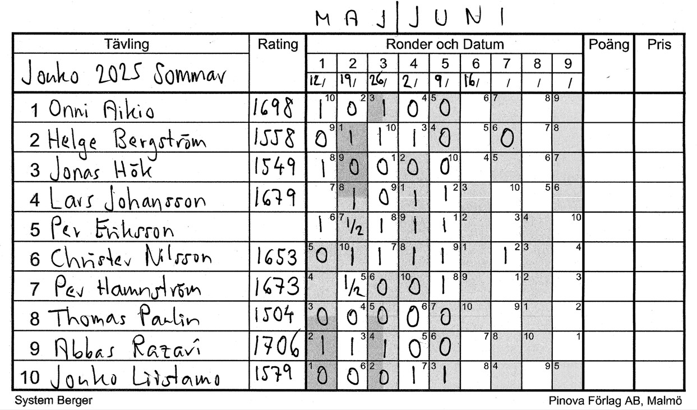

Home •
Klubben •
Medlemmar •
Jan-Christer Nilsson •
Turneringar
Joukos Sommar 2025

2025-04-21 HAMNSTRÖM Per vs NILSSON Christer
2025-05-19 LIISTAMO Jouko vs NILSSON Christer
2025-05-26 NILSSON Christer vs HAMNSTRÖM Per
2025-06-02 NILSSON Christer vs BERGSTRÖM Helge
2025-06-09 JOHANSSON Lars vs BERGSTRÖM Helge
2025-06-09 NILSSON Christer vs RAZAVI Abbas
2025-06-10 PAULIN Thomas vs NILSSON Christer 1
2025-06-10 PAULIN Thomas vs NILSSON Christer 2